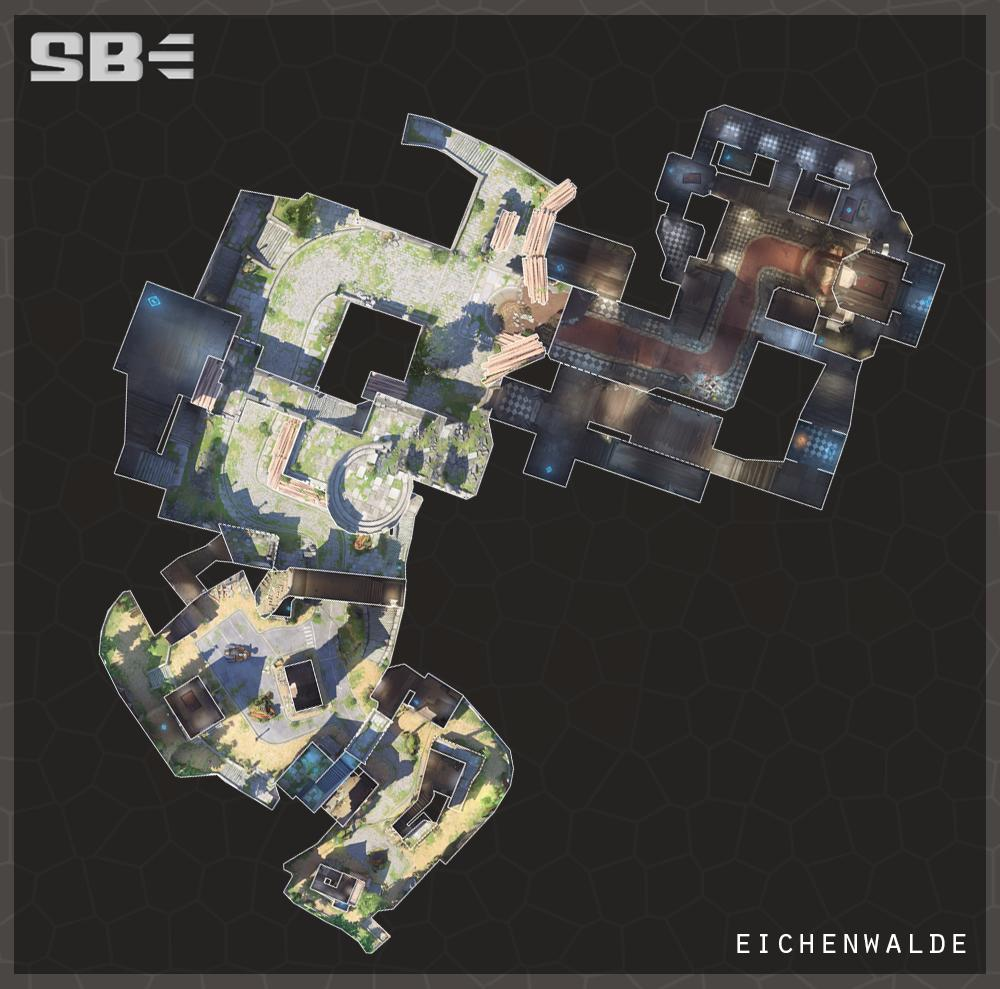

愛西瓦德 Eichenwalde 回首頁
回首頁
愛
西瓦德位於黑森林的中部。
該鎮是智械危機期間最著名的戰役景點之一。這裡正是十字軍領導人班德希克以及他的一些最優秀的士兵，包括他的學生萊茵哈特，對上持續推進的自動機隊的最後一戰。
因為愛西瓦德位在智械前往斯圖加特(一個更大的聚集地)的路上，該鎮於10月11日從3點到8點進行撤離。在寡不敵眾的情況下，幾乎所有的十字軍，包括組織領導人，都在戰鬥中被殺害。
然而，由於他們的英勇努力，德國軍隊得以反擊智械的進攻並贏得戰鬥。
如今，愛希瓦德已被遺棄，森林已經慢慢開始吞噬村莊。然而，戰爭的傷疤永遠不會消失。
